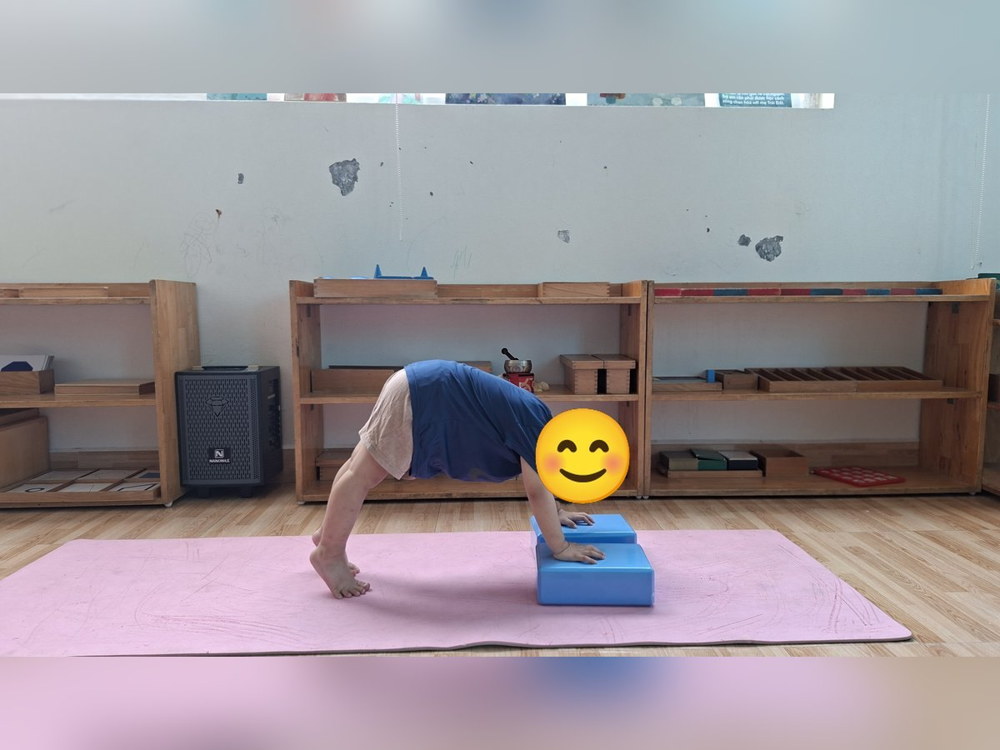
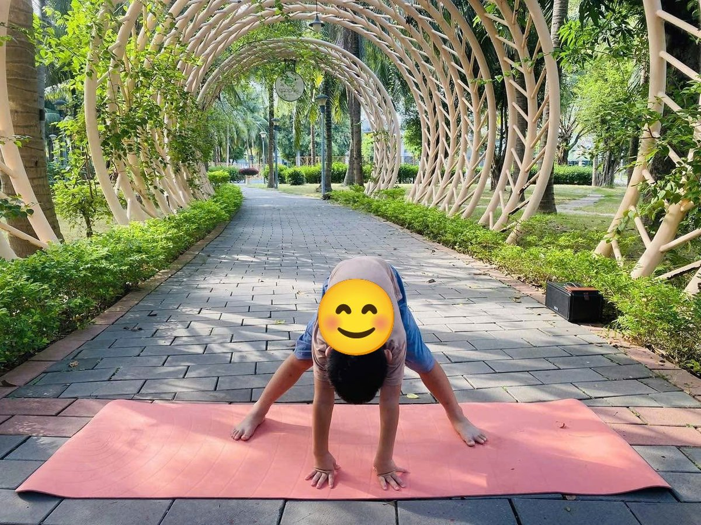

Chủ đề 43 · Gia đình của bé
Gấu Con và chiếc chăn ấm
🌟 Bài học trong câu chuyện
Giới luật yoga: Aparigraha – Không tham, biết chia sẻ. Bé vui khi chia sẻ đồ chơi, đồ ăn với người khác.
Kỹ năng sống: Nhường nhịn em, yêu thương anh chị em.
1. Khởi động (2 phút)
Cả lớp ngồi xếp bằng thành vòng tròn. Cùng thở 3 hơi thở bông hoa: hít vào bằng mũi như ngửi hoa, thở ra bằng miệng thật chậm. Chắp tay trước ngực và chào nhau: “Namaste, chào các bạn!”
2. Câu chuyện: Gấu Con và chiếc chăn ấm (đọc cho bé nghe, 4 phút)
Cô đọc trọn câu chuyện cho bé nghe trước. Sau đó cô kể lại từng đoạn ngắn và cả lớp cùng tập 10 tư thế ở phần bên dưới.
Nhà Gấu có bố Gấu, mẹ Gấu, ông Gấu, bà Gấu, Gấu Anh và Gấu Em. Bố Gấu khỏe mạnh, vững chãi như ngọn núi. Mẹ Gấu dịu dàng như cái cây che mát. Ông Gấu đi chậm, chống gậy. Bà Gấu tối nào cũng kể chuyện cổ tích.
Gấu Anh lớn rồi, khỏe mạnh, chạy nhảy cả ngày. Gấu Em còn bé xíu. Gấu Anh có một chiếc chăn len ấm áp, Gấu Anh quý lắm, không cho ai đụng vào.
Một đêm, trời trở lạnh. Gió lùa qua cửa sổ. Gấu Em không có chăn, nằm co ro, run run. Gấu Em khẽ nói: "Anh ơi, cho em đắp với". Gấu Anh ôm chặt chăn: "Chăn của anh mà!"
Nhưng nhìn em run, Gấu Anh thấy thương em quá. Gấu Anh nhớ bà kể: "Anh em như chân với tay". Gấu Anh bò sang, kéo chăn đắp cho em: "Mình đắp chung nhé".
Hai anh em ôm nhau dưới chiếc chăn ấm, ngủ thật ngon. Sáng ra, bố mẹ thấy vậy, mỉm cười thật hạnh phúc. Gấu Anh cũng thấy ấm áp trong lòng, ấm hơn cả chiếc chăn len.
3. Kể lại và tập 10 tư thế (6 phút)
-

1Bố vững như núi
🧘 Tư thế Ngọn núi (Mountain Peak)
Lời kể khi tập: Bố Gấu khỏe mạnh, vững chãi như ngọn núi. Mình làm ngọn núi thật vững.
Cách làm: Chống hai tay xuống thảm (hoặc lên viên gạch), kiễng chân, nâng mông thật cao, người thành ngọn núi hình chữ V úp ngược. Giữ 3 đến 5 nhịp thở.
-
 2
2Mẹ hiền như cây
🧘 Tư thế Cái cây (Tree)
Lời kể khi tập: Mẹ Gấu dịu dàng như cây xanh che mát.
Cách làm: Đứng một chân, bàn chân kia đặt vào bắp chân hoặc đùi (không đặt lên đầu gối), hai tay chắp trên đầu. Giữ 3 đến 5 nhịp thở.
-
 3
3Ông chống gậy
🧘 Tư thế Tam giác (Triangle)
Lời kể khi tập: Ông Gấu đi chậm, chống gậy.
Cách làm: Dang rộng hai chân, một tay chạm ống chân, tay kia vươn thẳng lên trời. Đổi bên. Giữ 3 đến 5 nhịp thở.
-
 4
4Bà ngồi kể chuyện
🧘 Tư thế Ngồi xếp bằng (Easy Pose)
Lời kể khi tập: Bà Gấu ngồi kể chuyện cổ tích.
Cách làm: Ngồi xếp bằng, lưng thẳng, hai tay đặt nhẹ trên đầu gối. Giữ 3 đến 5 nhịp thở.
-
 5
5Anh chị khỏe mạnh
🧘 Tư thế Chiến binh 2 (Warrior 2)
Lời kể khi tập: Gấu Anh khỏe mạnh, chạy nhảy cả ngày.
Cách làm: Bước một chân dài ra trước, gập gối trước, chân sau duỗi thẳng, hai tay vươn cao (hoặc dang ngang), đứng vững như chiến binh. Giữ 3 đến 5 nhịp thở.
-
 6
6Em bé
🧘 Tư thế Em bé (Child's Pose)
Lời kể khi tập: Gấu Em còn nhỏ, tối lạnh, Gấu Em run run.
Cách làm: Quỳ gối, ngồi lên gót chân, cúi người cho trán chạm thảm, hai tay duỗi ra trước hoặc để xuôi bên người. Giữ 3 đến 5 nhịp thở.
-
 7
7Mái nhà
🧘 Tư thế Chó úp mặt (Downward Dog)
Lời kể khi tập: Gấu Anh ôm chặt chăn: "Chăn của anh!"
Cách làm: Chống hai tay và hai chân xuống thảm, nâng mông lên cao, người thành hình tam giác. Giữ 3 đến 5 nhịp thở.
-
 8
8Cửa sổ
🧘 Tư thế Cái bàn (Table Top)
Lời kể khi tập: Gió lạnh thổi qua cửa sổ. Gấu Anh nhìn em run, thấy thương.
Cách làm: Chống hai tay dưới vai, hai gối dưới hông, lưng phẳng như mặt bàn. Giữ 3 đến 5 nhịp thở.
-

9Cả nhà gấu đi chơi
🧘 Tư thế Gấu bò (Bear Walk)
Lời kể khi tập: Gấu Anh bò đến, đắp chăn cho em: "Mình đắp chung nhé".
Cách làm: Dang rộng hai chân, cúi xuống chống hai tay xuống sàn, mông nâng cao, bò đi chậm rãi như gấu. Giữ 3 đến 5 nhịp thở.
-
 10
10Chăn ấm
🧘 Tư thế Thư giãn (Savasana)
Lời kể khi tập: Hai anh em ngủ ngon dưới chăn ấm. Cả nhà mỉm cười.
Cách làm: Nằm ngửa, tay chân thả lỏng, nhắm mắt, thở thật chậm. Giữ 3 đến 5 nhịp thở.
4. Thư giãn (2 phút)
Các con nằm ngửa, tay chân thả lỏng, nhắm mắt lại. Cô nói nhẹ: “Hít vào thật chậm… thở ra thật chậm… Con nhớ lại câu chuyện vừa rồi, nhớ người bạn mình thích nhất trong truyện. Cơ thể con mềm như bông, nhẹ như mây.” Sau đó các con nghiêng người, từ từ ngồi dậy.
5. Trò chuyện cùng bé (1 phút)
Gấu Anh biết nhường và chia chăn cho em. Không tham, biết chia sẻ là Aparigraha.
Cô hỏi các con:
- Nhà con có những ai?
- Con đã nhường em hoặc chia sẻ với anh chị điều gì?
Kết thúc bằng lời chào “Namaste” và một nụ cười.
Lưu ý cho thầy cô và bố mẹ: Tập trên thảm, không tập ngay sau khi ăn no. Bé chỉ làm tới mức thấy dễ chịu, không ép bé. Tư thế đứng một chân có thể cho bé vịn tường hoặc vịn tay người lớn.